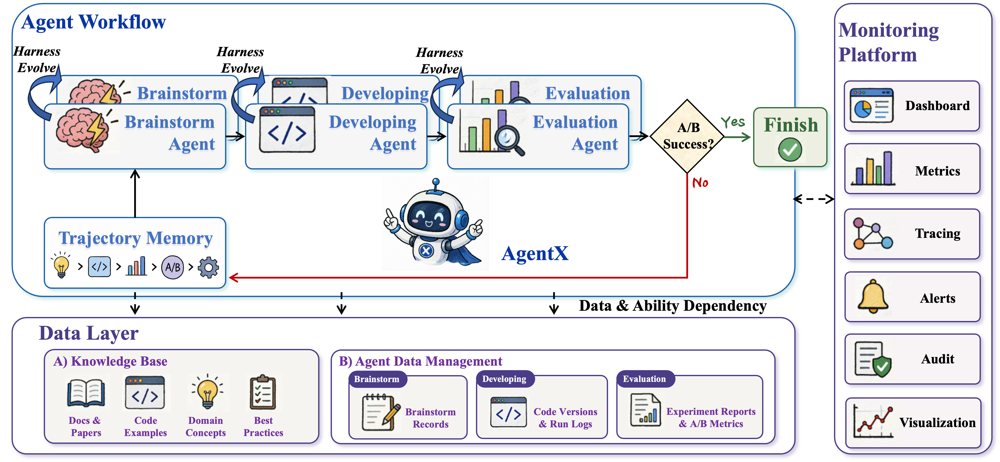

01研究背景与问题定义
推荐系统的一个想法要变成线上收益，必须跨过业务语义、生产代码、流量分配和延迟 A/B 判断。单个模型能生成代码，并不意味着它可以可靠完成这条链：离线指标可能偏离真实用户收益，合法代码也可能接错特征或漏掉开关。AgentX 把研究对象设为从想法到可上线实验的生产迭代过程，而非单次算法搜索。
它把提案、开发、评估和 harness 演化连接起来。第一条闭环用真实线上结果筛选推荐策略，第二条闭环用执行轨迹局部修改代理指令。两条反馈的对象不同：业务实验改变推荐系统，SGPO 改变代理怎样理解需求、实现和交接；基础模型、工具和顶层编排不会在一次 SGPO 更新中同时重写。
| 环节 | 单次生成容易遗漏 | AgentX 的干预 |
|---|---|---|
| 提案 | 好听的假设未必有数据和可改代码。 | 检索历史与系统证据，审查后形成明确实验产物。 |
| 开发 | 字段、DSL、注册和默认开关可能静默出错。 | 仓库查询、确定性检查、局部修复和 dryrun。 |
| 评估 | 短期分数上涨未必可上线。 | 真实 A/B、业务护栏、观察窗与人工复核。 |
| 自演化 | 整体重写难以判断哪里导致变化。 | 一次只改一个子代理，旧新成对回放后准入。 |
该系统仍有人类审核和上线决策。所谓自动化主要吸收执行密集的环节；不能把生产成功案例重新叙述成没有治理边界的全自动算法研发。
02方法与技术路线
共享知识与实验记录贯穿各角色，监控层记录从想法到上线的每个状态。线上策略轨与离线模型研究轨采用不同产物和验证，本页围绕有主要生产数据支持的策略轨展开。
Brainstorm · 可执行提案
澄清目标 → 有界批次生成 → 核查数据、代码范围与 A/B 参数 → 人工审查并形成交接产物。
Developing · 仓库约束实现
先查 schema / DSL，再原子实现；对照计划验证、编译和 dryrun，失败定点修复。
Evaluation · 线上证据
流量和灰度检查 → A/B 观察 → 主指标与业务护栏 → KEEP / EXTEND / DISCARD。
业务经验回路
成功和失败按目标、阶段、人群和杠杆归档，影响下一轮提案。
SGPO · 代理改进回路
轨迹诊断成语义梯度，只改目标子代理；旧新同题回放且兼容安全约束才接受。
提案：先把业务意图变成可以证伪的假设
Brainstorm 先澄清不完整目标，再基于历史实验、系统架构、SQL 数据分析及外部研究产生有界候选。每条想法必须带目标、可实现位置、预期产物和成熟状态；只有通过业务、人审、参数资源和代码范围检查，才形成交给开发的规范。
这种组织避免下游代理自行补出脆弱业务语义，也让失败实验可以按相同坐标回查。它不是“多生成创意”就自然提高研发质量；生产特征不存在或参数已被其他实验占用时，再好的想法也不能进入流量。
开发：先验证仓库事实，再让模型实现
开发者从批准提案拆出允许修改的文件、所需信号、所属流水线、默认关闭的开关和验收条件。使用特征前先通过 schema 工具确认字段，DSL 交给编译器支持的检查器，项目特有语法用静态规则检查，再原子实现并组合。
计划一致性验证与 dryrun 是不同层：前者检查是否实现了想法，后者检查能否在生产约束下运行。失败回传定点修复，重复修复也记作质量成本。通过编译不保证业务语义正确，因此代码分数同时考虑语义、覆盖、开关和多文件约束。
评估：真实奖励来自延迟 A/B，而非代理自述
部署前检查域、实验层、分流标识和互斥桶，经过白名单与灰度观察；线上数据缺失时调整观察窗口，不把不完整查询当结论。统计根据条件采用 CUPED、差分或组间比较，再与业务目标和护栏共同判断。
护栏不是所有轻微负指标一票否决：严重恶化可硬阻断，中度信号升级人工例外审查，观察类继续监测。KEEP 要求主目标过效应与显著性门槛，且无不可接受损害；EXTEND 表示继续观察，DISCARD 及无定论结果也写成未来约束。失败经验因此会改变下一轮搜索空间。
SGPO：把研发轨迹转换为局部规范更新
SGPO-I 从会话初始和后续用户约束抽取评分准则，分析执行轨迹，形成缺少约束、步骤顺序、证据或交接契约的自然语言诊断。所谓语义梯度不是数值导数，更新者据此只修改一个子代理的指令、验证规则、输出契约或工具纪律。
候选和旧规范在同一组重构任务上回放，净评分超过门槛且保持 schema、工具和人工审核边界才接受；拒绝补丁及原因也存作经验。SGPO-II 将证据换成人类已合并 MR，回到其 base commit 隐藏原补丁重做，以语义和覆盖等指标验收。两者提高局部可归因性，却仍依赖模型评价和回放任务的代表性。
论文原始结构图 · 点击对照

03实验设计与结果分析
生产系统究竟把多少想法变成可上线结果
快手三个工作实例、三周、两条业务线；LR 表示符合全量上线条件的结果，不是所有启动实验。
| 漏斗阶段 | 数量 | 条件转化 |
|---|---|---|
| 产生想法 | 374 | — |
| 通过提案检查 | 106 | 28.34% |
| 代码并启动实验 | 100 | 94.3%（对上一阶段） |
| 正向评估 / LR | 10 | 约 10%（对启动实验） |
端到端约 2.67%，不能用 94.3% 编码启动率代表商业成功率。大多数提案在编码前被挡住，已启动后仍多数没有形成正收益，说明自动化价值来自高吞吐、低执行摩擦与证据沉淀，而非每条想法更准。
线上报告主信息流累计 app 时长收益 0.561%，生活服务超过一亿元年化收入。它们是生产观测及年化推算口径，不能视为完整年度已实现收入，更不能分配给 SGPO 某一个更新。
吞吐提升是否同时提高单个想法质量
论文生产对照，按 worker-week 汇总；工程师为人工流程参照，并非随机匹配实验。
| 指标 | AgentX | 工程师 | 解读 |
|---|---|---|---|
| 并行实验数 | 12 | 1.5 | 8 倍并行度。 |
| 产生 app 时长增益 | 0.0623% | 0.0167% | 约 3.7 倍业务产出。 |
| 每条想法上线转化 | 2.7% | 5.1% | 自动系统单想法命中率更低。 |
这是典型的量与精度取舍：人工已预筛选的想法更准，自动化用更高数量补偿。三周内吞吐逐周增长与自演化同时发生，但知识积累、模板成熟、基础设施与代理规范都在变化，不能把时间趋势单独当作 SGPO 因果证明。
预算也没有统一折算为人力、模型调用、线上流量和审核时间总账。并行度、LR 和业务收益表达不同价值，不能只用一个倍数概括“研发效率提高”。
04贡献、局限与综合评价
核心贡献：将生产约束变成研发过程的一部分
AgentX 的系统贡献是把业务证据、仓库事实和线上评价接通，让每个阶段都交付下一阶段能核查的产物。负实验被保存为搜索约束，局部代理规范通过回放演化，形成业务层与研发工具层两种累积。真实部署说明这套组织方式能产生有价值结果，而不只是沙箱里的自动代码生成。
产能增长与自演化因果不能混为一谈
系统同时引入并行流水线、工具验证、历史知识和 SGPO；三周窗口的整体收益无法隔离每个设计。对人工参照也存在想法来源、预筛程度与执行资源差异。单想法命中率更低的结果尤其说明，自动化强项首先是扩展生产可能性，而非已证明具有更强创意判断。
要检验“自演化带来持续复利”，可让同一提案池进入冻结规范与可演化规范两组，固定人审、工具和流量预算，按周比较合格交接、回归和最终 LR。若只有并发扩大而单任务质量不变，收益来自流水线；若匹配资源后局部失误持续减少，才支持 SGPO 的累积作用。
综合看，论文提供了一套生产研发自动化的具体设计与观测证据。它最可靠的结论是约束清晰的多角色系统可以吸收大量执行工作并产出线上价值；对因果复利、跨公司可复制性和全成本优势，仍应保留条件。